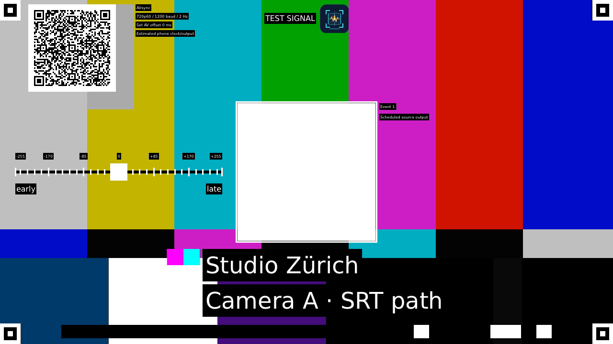

Sehen, was erkannt wird.
Getrennte Hinweise für Bild und Chirp sowie eine Kontur um das erkannte Testbild helfen beim Ausrichten.
Audio / Video · Sync / Latenz
Mach AV-Versatz sichtbar. Mit dem iPhone am echten Monitor — oder mit Generator und Analyzer direkt in deiner MXL-Pipeline.
Open Source · iOS-Beta über TestFlight · Container verfügbar

Echtes Generatorbild mit beispielhafter Beschriftung. Der Messwert dient der Illustration.
AVsync auf dem iPhone
Richte Kamera und Mikrofon auf das Testbild und den zugehörigen Lautsprecher. AVsync erkennt Bildmarker und Audio-Chirps und zeigt den zeitlichen Versatz als laufende Messung.
iOS · aktuell in TestFlightDie Beta ist derzeit für eingeladene Tester verfügbar. Es gibt noch keinen öffentlichen App-Store-Download. Android ist geplant.
Getrennte Hinweise für Bild und Chirp sowie eine Kontur um das erkannte Testbild helfen beim Ausrichten.
AV-Versatz mit gespeicherter Kamerakalibrierung oder direkt mit 0 ms Korrektur. Ergebnisse lokal speichern und selbst teilen.
Vollbild-Testsignal mit Farbbalken, bewegtem Sync-Indikator, Blitz am Chirp-Start und 1 oder 2 Chirps pro Sekunde. Mit eigenem Namen, Untertitel und Bild.
Die App zeigt Latenz als Schätzung mit unbekannter physischer Genauigkeit. Ein optionaler Uhrcheck erkennt grobe Zeitabweichungen.
mxl-avsync · Generator + Analyzer
Der Generator schreibt Bild und Ton in MXL-Flows. Der Analyzer misst an einem Video-/Audio-Eingangspaar und liefert Offset, Qualitätsbewertung und ein Ergebnisbild.
Clock-referenzierte Latenz benötigt eine passende synchronisierte Zeitreferenz. SRT, WebRTC oder ST 2110 werden über die jeweiligen Gateways in den Signalweg eingebunden.
Container beziehen
# Stabile Container-Version docker pull ghcr.io/leeo86/mxl-avsync:1.0.1 # Ein Image, zwei Rollen AVSYNC_ROLE=generator AVSYNC_ROLE=analyzer
MXL-Domain, Routing und Clock-Quelle richtest du passend zu deiner Umgebung ein. Neue mobile Testsignalformate sind im Entwicklungsbranch dokumentiert.
NMOS IS-04/IS-05, Web UI, REST-API und Readiness ohne geroutetes Eingangssignal.
Prometheus-Metriken, Clock-Diagnostik und klarer Status für nicht geroutete oder fehlende Signale.
Offen entwickelt
Quellcode, Dokumentation und Support findest du auf GitHub. Nenne App-/Container-Version und Signalweg. Bitte veröffentliche keine privaten Aufnahmen oder vertraulichen Daten in einem Issue.